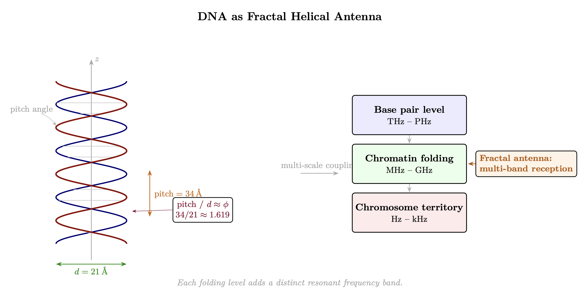

Chapter 6: Consciousness as an RLC Circuit
Tuning, Resonance, and Reception Dynamics
KEY FINDINGS — Chapter 6: Consciousness as an RLC Circuit
Evidence-tier key: see front matter for [L1]–[L4] definitions.
- [L1]The series RLC equations, Q factor, bandwidth, impedance matching, and transfer function mathematics are standard RF engineering, correctly applied to a consciousness analogy. The mathematical framework is anchored by Balanis (2005) and Rappaport (2002) as primary L1 textbook references.
- [L1-L2]Biological systems can sustain coherent oscillation: Frohlich condensation (1977) provides the foundational mechanism; Kim et al. (2021), McFadden and Al-Khalili (2018, Proc. R. Soc. A), and Tuszynski et al. (2020) confirm quantum biology as an active research program with substantial experimental support. Li et al. (2012) detect biological coherence at 300 K via quantum witness operators. Counterpoint: Cao et al. (2020, Science Advances) reassess photosynthetic coherence downward, though Frohlich and microtubule mechanisms remain supported.
- [L2]Q = Z_0/R as a unified measure of sovereignty captures multiple development pathways (wisdom accumulation, shadow work, attention training) in a single parameter with measurable proxies (HRV coherence per McCraty 2016, propaganda resistance).
- [L2]The bandwidth-depth tradeoff (\(\Delta f \cdot \Delta t \geq 1/2\pi \)) provides a quantitative framework for the episodic-mythic perception spectrum, with high-Q consciousness perceiving deeper temporal patterns at the cost of narrower immediate bandwidth.
- [L3-SPECULATIVE] Soul age as impedance evolution across incarnations, with L accumulating linearly and C discharging exponentially, maps developmental traditions onto RLC parameter trajectories but lacks empirical calibration.
- [L3-SPECULATIVE]The gnosis/ego distinction as on-resonance vs. off-resonance operation predicts that analytical reasoning functions as a reconstruction strategy when direct field reception is degraded.
- [L2]Mode shapes extend the lumped RLC to a distributed-parameter model where consciousness has spatial structure at each frequency — explaining why “same frequency” can produce different experiences, what contemplative practice decomposes, and how development increases experiential complexity (Section 6.2.10). Nishiyama et al. (2022) provide QFT-grade Lagrangian formalism for water dipole field dynamics supporting distributed-parameter treatment.
_________________________________
Receiver engineering begins with the front-end architecture. This chapter formalizes individual consciousness as a series RLC circuit — the core receiver whose tuning, selectivity, and impedance determine what portion of the Source broadcast can be received and processed.
6.1 RF Analogy Overview

6.1.1 What is an RLC Circuit?
An RLC circuit (Resistor-Inductor-Capacitor) is the fundamental resonant building block of radio receivers and filters (see Chapter 0 for the RF engineering foundations). In the consciousness mapping developed here, the three components become: R = resistance to coherent processing (karmic drag, unresolved trauma), L = inertia of belief systems (accumulated wisdom that resists rapid change), and C = emotional storage capacity (shadow material that accumulates charge and must eventually discharge). Together they create a resonant system whose tuning determines what portion of the Source broadcast the receiver can process.
6.1.2 Core Engineering Principles
Resonant Frequency: \[ f_0 = \frac {1}{2\pi \sqrt {LC}} \] At this frequency, inductive and capacitive reactances cancel, leaving only resistance. The circuit is maximally responsive.
Quality Factor: \[ Q = \frac {1}{R}\sqrt {\frac {L}{C}} \] Q determines the sharpness of resonance:
- High Q: Sharp peak, narrow bandwidth, high selectivity
- Low Q: Broad response, wide bandwidth, less selective
Bandwidth: \[ BW = \frac {f_0}{Q} \] The range of frequencies the circuit can effectively receive.
Impedance: \[ Z(\omega ) = R + j\left (\omega L - \frac {1}{\omega C}\right ) \] Complex impedance determines how the circuit loads signal sources and how efficiently power is transferred.
6.1.3 Why This Maps to Consciousness
The consciousness/soul can be modeled as a tuned receiver:
|
RF Component | Physical Function | Consciousness Mapping |
|
R (Resistance) | Energy dissipation | Entropy, distraction, material drag |
|
L (Inductance) | Magnetic energy storage | Soul inertia, wisdom, karmic patterns |
|
C (Capacitance) | Electric field storage | Shadow, trauma, unintegrated charge |
|
\(f_0\) | Resonant frequency | Characteristic reception scale (lower \(f_0\) = mythic; higher \(f_0\) = episodic) |
|
Q = \(Z_0\)/R | Quality factor | Primary development metric—sovereignty, lock resistance |
|
\(Z_0\) = \(\sqrt {}\)(L/C) | Characteristic impedance | Visible impedance range, power handling capacity |
|
BW = \(f_0\)/Q | Bandwidth | Range of frequencies accessible |
Critical distinction: \(f_0\) tells you the characteristic scale of patterns you couple to; Q tells you how sovereign you are at that tuning. \(Z_0\) determines your visible impedance range – which density tiers you can perceive. Archetypal type (healer, warrior, teacher, creator) is encoded in the CDMA layer, not in \(f_0\). Spiritual traditions saying “raise your frequency” actually mean “raise your Q.”
Audio bridge. The RLC circuit described here is mathematically identical to a parametric equalizer: center frequency (\(f_0\)) is the EQ band, Q-factor is filter sharpness, and impedance (\(Z_0\)) is gain staging / headroom. Resistance (R) maps to noise and distortion in the signal chain. Raising Q in audio narrows the filter and rejects adjacent frequencies — exactly the sovereignty mechanism described below. The bandwidth–depth tradeoff (Section 6.3) is the audio engineer’s familiar principle: a narrow EQ boost is precise but misses broadband content; a wide boost captures everything but lacks discrimination.
This model explains:
- Why some people have high sovereignty (high Q = selective, hard to capture) while others are easily influenced (low Q = responds to many signals, easily swept up)
- How practices change what you can receive (tuning R, L, C)
- Why trauma creates static (increases stored charge in C)
- Why wisdom provides stability (increases L, inertia against perturbation)
- Why “sensitive” and “grounded” relate to R (damping), not Q—high R means heavily damped (sluggish), low R means lightly damped (responsive)
_________________________________
6.2 Mathematical Model
6.2.1 The Series RLC Equations
For a series RLC circuit driven by voltage source \(V_{in}\): \[ L\frac {di}{dt} + Ri + \frac {1}{C}\int i \, dt = V_{in}(t) \] In terms of charge q (where \(i = dq/dt\)): \[ L\frac {d^2q}{dt^2} + R\frac {dq}{dt} + \frac {q}{C} = V_{in}(t) \] This is the equation of a damped harmonic oscillator driven by an external force.
6.2.2 Natural Response (No Driving Signal)
When \(V_{in} = 0\), the circuit exhibits damped oscillation: \[ q(t) = Q_0 e^{-\alpha t} \cos (\omega _d t + \phi ) \] Where:
| Variable | Description |
| \(\alpha _{damp}\) | Damping coefficient: \(R / 2L\) |
| \(\omega _d\) | Damped frequency: \(\sqrt {\omega _0^2 - \alpha _{damp}^2}\) |
| \(\omega _0\) | Natural frequency: \(1/\sqrt {LC}\) |
Three damping regimes:
|
Condition | Behavior | Consciousness Analog |
|
\(\alpha _{damp} < \omega _0\) (Underdamped) | Oscillates while decaying | Active inner life, dynamic processing |
|
\(\alpha _{damp} = \omega _0\) (Critically damped) | Fastest non-oscillatory decay | Balanced, efficient processing |
|
\(\alpha _{damp} > \omega _0\) (Overdamped) | Slow exponential decay | Sluggish, heavy, blocked |
6.2.3 Steady-State Frequency Response
When driven by sinusoidal \(V_{in} = V_0 \cos (\omega t)\):
Transfer function (phasor): \[ H(\omega ) = \frac {I}{V_{in}} = \frac {1}{R + j(\omega L - 1/\omega C)} \] Magnitude: \[ \left |H(\omega )\right | = \frac {1}{\sqrt {R^2 + (\omega L - 1/\omega C)^2}} \] At resonance (\(\omega = \omega _0\)): \[ \left |H(\omega _0)\right | = \frac {1}{R} \] Response is maximized and limited only by resistance.
6.2.4 The Q Factor in Detail
Definition from energy: \[ Q = 2\pi \cdot \frac {\text {Energy stored}}{\text {Energy dissipated per cycle}} \] Relationship to bandwidth: \[ Q = \frac {f_0}{\Delta f_{3dB}} \] Where \(\Delta f_{3dB}\) is the -3dB bandwidth.
Voltage magnification at resonance: \[ V_C = V_L = Q \cdot V_{in} \] The capacitor and inductor voltages can be Q times larger than the input. This is how weak signals become perceptible—resonance amplifies them.
6.2.5 Impedance Matching
Maximum power transfer occurs when source impedance equals load impedance (conjugate matched): \[ Z_{source} = Z_{load}^* \] For purely resistive matching: \[ R_{source} = R_{load} \] Impedance mismatch reflection coefficient: \[ \Gamma = \frac {Z_L - Z_S}{Z_L + Z_S} \] Power reflected = \(|\Gamma |^2\)
When mismatched, energy bounces back rather than being absorbed. In consciousness terms, the signal doesn’t penetrate.
6.2.5a Parametric Amplification: Energy Without Direct Injection
[L2]
In a standard amplifier, signal-frequency energy is injected directly into the circuit. A parametric amplifier works differently: a pump signal at frequency \(2f\) modulates a reactive element (typically \(C\) or \(L\)), transferring energy from the pump into the signal mode at frequency \(f\) without injecting signal-frequency energy directly. The mechanism is nonlinear mixing: the time-varying parameter creates coupling between pump and signal modes. Josephson parametric amplifiers exploit this principle to achieve amplification below the quantum noise floor, adding less than half a photon of noise per measurement cycle.
The basic parametric gain relation:
\[ G_{param} \propto Q \cdot V_{pump} \]
where \(V_{pump}\) is the pump amplitude and \(Q\) is the circuit quality factor. Higher-Q circuits amplify parametric pump signals more efficiently because the resonant energy storage enhances the nonlinear interaction time.
Audio bridge. Parametric speakers demonstrate this principle acoustically: two ultrasonic beams intersect in air, and air’s nonlinearity generates an audible difference frequency. Sound materializes from apparently “empty space” through nonlinear mixing — neither ultrasonic beam is audible alone, yet their interaction creates perceptible audio. A child pumping a swing provides an even more intuitive example: by standing and squatting at twice the swing’s natural frequency, the child modulates the center-of-mass position (a system parameter) at \(2f\), transferring gravitational potential energy into swing-mode oscillation. No one pushes the swing directly at its natural frequency; the energy enters through parameter modulation.
Structural bridge. Parametric instability in rotating machinery follows the same mathematics. Helicopter ground resonance — where coupling between rotor blade lag modes and fuselage rocking modes can destroy an airframe in seconds — is parametric amplification operating catastrophically. The rotor rotation modulates the system’s effective stiffness (a parameter) at twice the natural frequency of the coupled mode, pumping energy into fuselage oscillation until structural failure. The energy source is the engine; the parametric coupling determines where that energy flows.
Consciousness mapping. The parametric amplifier model reframes how spiritual practices work. Meditation, breathwork, ritual, and group ceremony do not inject consciousness-frequency energy directly. They function as parameter modulators: practices that periodically vary \(L\) (through attention/intention cycling) or \(C\) (through somatic charge-discharge cycles) at roughly \(2f_0\). The energy that gets amplified comes from elsewhere: metabolic reserves, environmental torsion flux (Chapter 5), or collective field coherence (Chapter 10). The practice creates the coupling condition that lets ambient energy flow into the consciousness signal mode.
This accounts for several otherwise puzzling phenomena:
- Emergence from “nothing”: Two individually imperceptible carriers (e.g., intention + ambient field) combine nonlinearly to produce perception that seems to materialize from empty space, just as the parametric speaker creates audible sound from inaudible ultrasonics.
- Practice acceleration for advanced practitioners: Since \(G_{param} \propto Q \cdot V_{pump}\), higher-Q consciousness circuits amplify the same parametric pump more efficiently. An advanced meditator with \(Q = 6\) receives three times the parametric gain from the same breathwork protocol as a beginner with \(Q = 2\). Practice raises Q, which increases parametric gain, which deepens the practice effect — a positive feedback loop.
- Group amplification: Synchronized group practice (chanting, drumming, coordinated breathwork) creates a coherent pump signal \(V_{pump}\) with amplitude proportional to \(\sqrt {N}\) for \(N\) coherent participants. The parametric gain scales accordingly, which is why group retreats and ceremonies produce effects disproportionate to individual effort.
- Tradition-specific “pump frequencies”: Different traditions may have empirically optimized their pump parameters: the 0.1 Hz breathwork cycle (Chapter 18), the ~6 Hz shamanic drum, Gregorian chant intervals, each targeting \(2f_0\) for different characteristic resonant frequencies.
Connection to existing Q treatment. This section extends the Q-sovereignty relationship established in Section 6.2.6: Q determines selectivity, lock resistance, and parametric amplification efficiency. The same parameter that makes a consciousness circuit harder to capture (narrow injection lock bandwidth, Section 6.2.6) also makes it more responsive to intentional parametric pumping. Sovereignty and receptivity to genuine practice are not opposed; they are both consequences of high Q.
6.2.6 Q Factor: The True Measure of Spiritual Development
The Central Insight: Spiritual literature speaks of “raising your frequency,” but the mathematically correct analog is raising your Q factor: \[ Q = \frac {Z_0}{R} = \frac {1}{R}\sqrt {\frac {L}{C}} \] Q encompasses both characteristic impedance \(Z_0\) (the L/C ratio) and resistance R (distraction/damping). There are therefore multiple paths to sovereignty: raising \(Z_0\) through wisdom accumulation (L\(\uparrow \)) or shadow work (C\(\downarrow \)), or reducing R through attention training and meditation.
Why Q, not frequency?
|
Parameter Change | Effect on \(f_0\) | Effect on \(Z_0\) | Effect on Q | Spiritual Meaning |
|
L \(\uparrow \) (wisdom grows) | \(f_0\) \(\downarrow \) | \(Z_0\) \(\uparrow \) | Q \(\uparrow \) | More stable, harder to perturb |
|
C \(\downarrow \) (shadow clears) | \(f_0\) \(\uparrow \) | \(Z_0\) \(\uparrow \) | Q \(\uparrow \) | Less reactive charge storage |
|
R \(\downarrow \) (attention trained) | — | — | Q \(\uparrow \) | Clearer signal, less noise |
|
All three (development) | Ambiguous | \(Z_0\) \(\uparrow \) | Q \(\uparrow \)\(\uparrow \)\(\uparrow \) | Maximum sovereignty |
L and C have opposite effects on resonant frequency but same-direction effects on impedance and Q. Reducing R provides yet another path to higher Q. Since genuine spiritual development involves wisdom accumulation (L\(\uparrow \)), shadow work (C\(\downarrow \)), and attention training (R\(\downarrow \)), Q factor is the correct measure — it captures all three developmental pathways.
What high Q gives you:
- 1.
- Resistance to injection locking: Lock bandwidth \(\propto \) 1/Q. Higher Q = narrower lock range = harder to capture.
- 2.
- Underdamped dynamics: Damping ratio \(\zeta \) = 1/(2Q). Higher Q = more underdamped = richer inner dynamics.
- 3.
- Selectivity: High Q circuits only respond to signals near their resonant frequency—off-frequency signals are rejected.
- 4.
- Amplification at resonance: Voltage magnification at resonance = Q. Higher Q = stronger response to matched signals.
The key reframe:
- \(f_0\) = what characteristic scale of patterns you couple to (mythic vs. episodic reception)
- Q = how sovereign you are (resistance to capture, selectivity)
- \(Z_0\) = your visible impedance range (which density tiers you can perceive)
- CDMA code = which archetypal type you are (healer, warrior, teacher, creator)
A being can have low \(f_0\) (tuned to dense material concerns) but high Q (difficult to manipulate, selective processing). Or high \(f_0\) (tuned to subtle realms) but low Q (easily captured by any signal in that band).
Q applies not only to individual development but to environmental characterization. Chapter 13, Section 13.5.5 extends this analysis to the density environment itself, showing that 3D’s low environmental Q (high \(R_{env}\), high \(C_{env}\)) creates the optimal conditions for building robust individual Q—a property called “Q-hardening.” Souls that achieve high Q against 3D’s maximal headwinds carry stress-tested sovereignty that cannot be replicated in easier environments.
Loaded vs. Unloaded Q. Standard RF engineering distinguishes two Q values (Steer, 2019, §9.5). Unloaded Q (\(Q_U\)) is the intrinsic Q of the resonator in isolation — the soul’s own RLC parameters without environmental coupling. Loaded Q (\(Q_L\)) is the Q when the resonator is coupled to external circuits: \[ Q_L = \frac {Q_U}{1 + \beta _{coupling}} \] where \(\beta _{coupling}\) is the coupling coefficient to the environment (relationships, institutions, parasitic systems). \(Q_L < Q_U\) always — coupling to the world always reduces effective Q. This distinction resolves an implicit tension: how can “intrinsic sovereignty” be preserved while “effective sovereignty” is degraded? The answer is \(Q_U\) vs. \(Q_L\). The Fall (Chapter 14) increased environmental coupling (\(\beta _{coupling} \uparrow \)), reducing \(Q_L\) across the population without necessarily changing anyone’s intrinsic \(Q_U\). Grid restoration (Chapter 13) reduces \(\beta _{coupling}\), recovering \(Q_L\) toward \(Q_U\). When Chapter 11 uses Q to determine injection locking susceptibility (lock bandwidth \(\propto 1/Q\)), this is \(Q_L\) — which is why environmental context affects capture vulnerability.
6.2.6.1 Impedance Matching as Consciousness Range
The visible range of consciousness—which density tiers you can perceive—is determined by impedance matching, not frequency tuning. Each density tier has a characteristic impedance \(Z_d\). Your ability to couple to (perceive) that density depends on impedance match: \[\Gamma _d = \frac {Z_d - Z_0}{Z_d + Z_0}\] Perception threshold: You perceive density \(d\) if \(|\Gamma _d| < \Gamma _{threshold}\).
Visible impedance range: Given your \(Z_0\) and a perception threshold \(\Gamma _{th}\): \[Z_{min} = Z_0 \cdot \frac {1 - \Gamma _{th}}{1 + \Gamma _{th}}, \quad Z_{max} = Z_0 \cdot \frac {1 + \Gamma _{th}}{1 - \Gamma _{th}}\]
| \(\Gamma _{th}\) | \(Z_{max}/Z_0\) | \(Z_{min}/Z_0\) | Interpretation |
| 0.1 | 1.22 | 0.82 | Narrow range, high selectivity |
| 0.3 | 1.86 | 0.54 | Moderate range |
| 0.5 | 3.0 | 0.33 | Wide range, lower selectivity |
| 0.7 | 5.67 | 0.18 | Very wide range |
Your \(Z_0\) is determined by:
- Neurological structure (cavity resonance properties)
- DNA helical geometry (adaptive antenna configuration)
- Biofield coherence (local field environment)
- Practice/training state (L and C modifications from spiritual practice)
Raising \(Z_0\) through practice (increasing L via wisdom, decreasing C via shadow work) shifts your entire visible range upward, granting access to higher-density tiers while potentially losing sensitivity to lower ones. Reducing R (through meditation, attention training) also raises Q directly, providing another developmental pathway.
6.2.6.2 Archetypal Tuning: What \(f_0\) Actually Represents
If \(Z_0\) measures sovereignty (and determines visible impedance range), what does \(f_0\) measure?
The mathematical distinction:
|
Parameter | Formula | Depends On | Meaning |
|
\(Z_0\) | \(\sqrt {L/C}\) | Ratio of L to C | Power level, sovereignty |
|
\(f_0\) | \(\frac {1}{2\pi \sqrt {LC}}\) | Product of L and C | Characteristic reception scale |
\(Z_0\) and \(f_0\) are orthogonal dimensions: two beings can have identical \(Z_0\) (same power level) but different \(f_0\) (different characteristic scale), or vice versa.
Scale tuning via demodulation:
Source broadcasts infinite bandwidth containing all archetypal patterns across the AM layer of each dimensional carrier (see Chapter 3, Section 2.3 and Chapter 5 for the full three-layer architecture). Your resonant frequency \(f_0\) determines the characteristic scale of AM-layer patterns you preferentially couple to: lower \(f_0\) corresponds to larger wavelength, longer-timescale patterns (mythic, civilizational), while higher \(f_0\) couples to shorter-timescale, more local patterns (episodic, personal). Archetypal type – whether you express as healer, warrior, teacher, or creator – is determined by the CDMA spreading code (soul identity layer), not by \(f_0\) (see Chapter 5, Section 5.5.3).
|
Configuration | L | C | \(f_0\) | Reception Character |
|
Heavy/Deep | High | High | Low | Slow, grounded processing; couples to long-timescale, mythic-scale patterns |
|
Light/Quick | Low | Low | High | Fast, ethereal processing; couples to short-timescale, episodic-scale patterns |
|
Balanced (developed) | High | Low | Medium | Integrated; can access full scale spectrum |
The Convergence Pattern: Scale Integration
Development naturally pushes \(f_0\) toward a medium value regardless of starting point:
|
Starting Point | Development Process | Effect on \(f_0\) |
|
Heavy oscillator (high L, high C) | Shadow work (C\(\downarrow \)) | \(f_0\) increases toward medium |
|
Light oscillator (low L, low C) | Wisdom accumulation (L\(\uparrow \)) | \(f_0\) decreases toward medium |
Young souls may have extreme \(f_0\), strongly coupled to a single scale of pattern (either long-timescale mythic or short-timescale episodic). Old souls converge toward medium \(f_0\), representing scale integration: the ability to couple fluidly across the full range of pattern scales rather than being locked to one. This is distinct from archetypal integration, which operates in the CDMA layer (see Chapter 5, Section 5.5.3).
The Four Dimensions of Consciousness:
|
Dimension | Parameter | Question Answered |
|
Sovereignty | Q | How sovereign/selective are you? (Primary development metric) |
|
Range | \(Z_0\) | What density tiers can you perceive? (Visible impedance range) |
|
Scale | \(f_0\) | What characteristic scale of patterns do you couple to? |
|
Archetypal Type | CDMA code | Which archetypal type are you? (healer, warrior, teacher, creator) |
A complete description of consciousness requires all four. Two “old souls” might have similar Q, \(Z_0\), and \(f_0\) but different CDMA codes: one expressing healer archetypes, another teacher archetypes. Both are developed to the same level and couple to the same scale of patterns; they carry different soul-identity signatures that determine archetypal expression (see Chapter 5, Section 5.5.3).
6.2.6.3 Jung’s Spectrum Analogy
Jung compared the psyche to the electromagnetic spectrum: conscious awareness occupies a narrow band—like visible light—while vast unconscious domains extend beyond perception in both directions (Jung, CW 8, On the Nature of the Psyche, 1947/1954, ¶388–420). The personal unconscious corresponds to adjacent bands (infrared, ultraviolet)—nearby but below threshold. The collective unconscious corresponds to radio waves and gamma rays—pervasive, penetrating all matter, carrying archetypal information that every psyche receives but few consciously detect.
The RLC model formalizes this qualitative precedent. The bandwidth of conscious awareness is: \[ BW = \frac {f_0}{Q} \] A high-Q individual tunes sharply: intense perception of a narrow frequency band, with everything outside that band attenuated below conscious threshold. A low-Q individual receives broadly but shallowly—aware of many frequencies but mastering none. In both cases, the full spectrum exists; only the received portion differs.
The unconscious, in this framing, is not a separate domain but simply the set of all frequencies outside the current tuning bandwidth. Shadow material (Jung’s repressed content) corresponds to signals just outside the passband, close enough to create interference patterns (neurosis, projection) but attenuated enough to stay below conscious detection. Individuation widens the effective bandwidth without sacrificing Q, achieved not by lowering Q but by learning to retune \(f_0\) dynamically, sweeping across the spectrum while maintaining sharp selectivity at each setting.
Source broadcasts across the entire spectrum. The RLC circuit can only receive a slice. Jung’s analogy and the RF model converge on the same insight: expanding consciousness means expanding bandwidth, not changing the signal.
6.2.7 Mapping to Consciousness Parameters
Resistance R (Energy Dissipation): \[ R = R_{base} + R_{stress} + R_{distraction} + R_{attachment} \]
- \(R_{base}\): Baseline metabolic/entropic drain
- \(R_{stress}\): Cortisol, fight-or-flight activation
- \(R_{distraction}\): Attention fragmentation
- \(R_{attachment}\): Energy leaking to fixations
Higher R \(\relax \to \) Lower Q \(\relax \to \) Broader but weaker reception.
Inductance L (Soul Capacity): \[ L = L_{soul} + L_{wisdom} + L_{integration} \]
- \(L_{soul}\): Inherent soul age/depth—capacity to hold complexity
- \(L_{wisdom}\): Accumulated integrated experience—ability to hold paradox
- \(L_{integration}\): Cross-lifetime accumulated patterns—breadth of perspective
High L is CAPACITY, not rigidity. This is a critical distinction:
|
Property | High L Represents | Does NOT Represent |
|
Depth | Ability to hold complexity without collapsing | Stubbornness |
|
Scale | Can think in centuries, not just days | Slowness |
|
Stability | Massive flywheel—hard to perturb | Rigidity |
|
Vastness | Room for many perspectives simultaneously | Closed-mindedness |
The “old soul” quality: High-L individuals have gravitas, presence, depth. They can absorb perturbations into their vastness rather than being knocked off center. This isn’t because they’re stuck—it’s because they’re LARGE.
Higher L \(\relax \to \) Lower \(f_0\), higher \(Z_0\), more capacity, harder to perturb, greater sovereignty.
Capacitance C (Shadow Storage): \[ C = C_{baseline} + C_{trauma} + C_{suppression} \]
- \(C_{baseline}\): Normal experience storage capacity
- \(C_{trauma}\): Unintegrated shock charge
- \(C_{suppression}\): Actively repressed material
Higher C \(\relax \to \) Lower \(f_0\), lower \(Z_0\), more stored “charge” waiting to discharge, easier to capture.
6.2.7.1 Parameter Evolution from Practices
How spiritual practices modify the RLC values:
|
Practice | Effect on R | Effect on L | Effect on C | Effect on \(Z_0\) | Net Effect |
|
Meditation | Decreases | — | — | — | \(\uparrow \) Q, clearer reception |
|
Breathwork | Decreases | — | Discharges (\(\downarrow \)C) | \(\uparrow \) \(Z_0\) | \(\uparrow \) Q, \(\uparrow \) sovereignty |
|
Shadow work | — | — | Discharges (\(\downarrow \)C) | \(\uparrow \) \(Z_0\) | \(\uparrow \) \(Z_0\), \(\uparrow \) sovereignty |
|
Wisdom teachings | — | Increases | — | \(\uparrow \) \(Z_0\) | \(\uparrow \) \(Z_0\), \(\uparrow \) stability |
|
Service/karma yoga | Decreases | Increases | — | \(\uparrow \) \(Z_0\) | \(\uparrow \) Q, \(\uparrow \) \(Z_0\) |
|
Trauma (negative) | Increases | — | Increases | \(\downarrow \) \(Z_0\) | \(\downarrow \) Q, \(\downarrow \) \(Z_0\), vulnerable |
Both shadow work (C\(\downarrow \)) and wisdom accumulation (L\(\uparrow \)) raise \(Z_0\). This is why these seemingly different paths both lead to “spiritual development” — they both increase sovereignty/impedance.
_________________________________
6.2.8 Soul Age as Impedance Evolution
The concept of “soul age” — accumulated development across incarnations — maps to the evolution of RLC parameters over cosmic timescales. This section formalizes how Q and characteristic impedance \(Z_0\) evolve through incarnational experience.
6.2.8.1 Q Factor and Temporal Perception
The Temporal Integration Window
The Q factor defines the temporal integration window through which consciousness perceives reality, not just selectivity. From the RLC time constant: \[ \tau = \frac {2L}{R} = \frac {2\pi L}{\omega _0 R} \] Since \(Q = \frac {1}{R}\sqrt {\frac {L}{C}}\) and \(\omega _0 = \frac {1}{\sqrt {LC}}\), we can write: \[ \tau _{integration} = \frac {Q}{\omega _0} = \frac {Q}{2\pi f_0} \] \(\tau \) is proportional to L directly: high inductance gives high temporal integration. This is the same physics as SAR (Synthetic Aperture Radar, Chapter 3, Section 5): larger aperture enables finer resolution. Higher \(Z_0\) (from high L, low C) = wider perceptual aperture = longer effective integration time.
This integration window is the characteristic timescale over which experiences are coherently processed:
| Q Factor | \(\tau _{integration}\) | Temporal Perception |
| Q < 1 | Sub-cycle | Fragmented, moment-to-moment |
| Q \(\approx \) 1 | One cycle | Single-event focus |
| Q = 2-5 | 2-5 cycles | Short narrative spans |
| Q = 5-10 | 5-10 cycles | Extended life planning |
| Q > 10 | Multi-cycle | Trans-generational thinking |
High Q enables pattern recognition across longer timescales. Where a low-Q consciousness sees isolated events, a high-Q consciousness perceives the underlying wave patterns connecting events across time.
The Bandwidth-Depth Tradeoff
Bandwidth and temporal depth are inversely related: \[ BW = \frac {f_0}{Q} \quad \Rightarrow \quad BW \cdot \tau _{integration} = \frac {1}{2\pi } \] This is a fundamental uncertainty relation for consciousness: \[ \Delta f \cdot \Delta t \geq \frac {1}{2\pi } \] Interpretation: You can either perceive many frequencies superficially (broad bandwidth, shallow time) OR few frequencies deeply (narrow bandwidth, deep time). Soul age progression involves increasing Q to enable deeper temporal perception while accepting narrower immediate bandwidth.
Practical manifestation:
- Low Q (young soul): Responds to many stimuli but with shallow processing; lives “in the moment” reactively
- High Q (old soul): Fewer things register, but those that do are processed with depth; sees patterns across lifetimes
6.2.8.2 The Episodic-Mythic Perception Spectrum
A Continuous Spectrum, Not Two Modes
Temporal perception exists on a continuous spectrum from purely episodic to fully mythic. Q determines where on this spectrum a consciousness naturally operates:
|
Spectrum Position | Q Range | Perception Character |
|
Pure episodic | Q < 1 | Events as isolated incidents, no pattern recognition |
|
Mostly episodic | Q \(\approx \) 1-2 | Some pattern awareness, dominated by immediate |
|
Balanced | Q \(\approx \) 2-4 | Flexible movement between event and pattern |
|
Mostly mythic | Q \(\approx \) 4-7 | Pattern-first perception, events as instances |
|
Deep mythic | Q > 7 | Events nearly dissolve into archetypal patterns |
Episodic Pole (low Q end):
- Events experienced as discrete, isolated occurrences
- Linear, sequential time perception
- Focus on immediate causes and effects
- “What happened” dominates
Mythic Pole (high Q end):
- Events experienced as recurrences of archetypal patterns
- Cyclical, layered time perception
- Focus on eternal patterns expressing through particulars
- “What this means” dominates
Development does not replace episodic with mythic — it expands range. High-Q beings can access episodic perception when needed but default to mythic. Low-Q beings are stuck in episodic mode.
Mathematical characterization: \[ \Psi _{perception}(t) = \alpha _{episodic} \cdot \delta (t - t_0) + \alpha _{mythic} \cdot \sum _n A_n \cos (n\omega _0 t + \phi _n) \] Where:
| Variable | Description |
| \(\alpha _{episodic}\) | episodic mode weight (high for young souls) |
| \(\alpha _{mythic}\) | mythic mode weight (high for old souls) |
| The sum | represents archetypal patterns with harmonic structure |
Q determines spectrum position: \[ \frac {\alpha _{mythic}}{\alpha _{episodic}} \propto Q^2 \] Why mythic perception requires high Q:
Mythic perception recognizes the SAME PATTERN across different temporal instantiations. This requires:
- 1.
- Integration across time: Longer \(\tau _{integration}\) to correlate distant events
- 2.
- Pattern extraction: Narrow bandwidth to filter out noise
- 3.
- Stability: High Q prevents immediate events from overwhelming pattern recognition
The Phase Coherence Requirement: \[ \sigma _{mythic} = \left | \frac {1}{N} \sum _{events} e^{i\phi _{event}} \right | \] Mythic perception emerges when \(\sigma _{mythic} \to 1\)—when the consciousness maintains phase coherence across the events being compared. This requires the stability that only high Q provides.
Subcarrier Interpretation (Chapter 5): The episodic-mythic spectrum maps directly to demodulation mode access. Episodic perception corresponds to AM-only demodulation – reading morphic forms and physical events. Mythic perception corresponds to multi-mode demodulation (AM + PM + CDMA) – perceiving archetypal patterns, probability structures, and identity connections simultaneously. Low Q restricts the receiver to AM-only mode; high Q enables access to PM and CDMA layers, explaining why mythic perception is qualitatively different from merely “slower” episodic perception.
6.2.8.3 Soul Age Progression: The Impedance Evolution Table
The following table maps RLC parameters across soul age stages, correlating electrical characteristics with phenomenological descriptions from wisdom traditions (particularly the Michael Teachings framework).
Note: Parameter values are illustrative model outputs scaled to conventional units, not empirical measurements. The qualitative ordering (Infant < Baby < Young < Mature < Old) is the model’s primary claim.
|
Soul Age | Incarnations | L (H, illustrative) | C (F, illustrative) | \(Z_0\) (\(\Omega \), illustrative) | Q (illustrative) | \(\tau _{int}\) (illustrative) | Temporal Span | Dominant Mode |
|
Infant | 1-50 | 0.1-0.3 | 0.8-1.0 | 0.3-0.6 | <1 | Hours | Hours-Days | Survival |
|
Baby | 50-150 | 0.3-0.6 | 0.5-0.8 | 0.6-1.1 | ~1 | Days | Days-Weeks | Rules |
|
Young | 150-300 | 0.6-1.2 | 0.3-0.5 | 1.1-2.0 | 1-2 | Weeks | Months-Years | Achievement |
|
Mature | 300-500 | 1.2-2.5 | 0.2-0.3 | 2.0-3.5 | 2-4 | Months | Years-Decades | Relationship |
|
Old | 500-800 | 2.5-5.0 | 0.1-0.2 | 3.5-7.0 | 4-7 | Years | Lifetimes | Philosophical |
|
Transc. | 800+ | 5.0+ | <0.1 | 7.0+ | 7+ | Decades | Civilizations | Unity |
Epistemic note [L3]: The soul age framework draws from the Michael Teachings (channeled material) and Vedic/Buddhist reincarnation traditions. Specific incarnation counts and parameter values are interpretive extrapolations, not empirical data. The convergent pattern across traditions is suggestive but does not constitute empirical validation of the specific RLC parameter mapping.
Clarification: “Infant,” “Baby,” “Young,” “Mature,” and “Old” refer to soul development across many incarnations, not biological maturation within one lifetime. Bodies mature in decades; souls mature across hundreds of lifetimes. A biologically old person may be a “young soul,” and a child may incarnate as an “old soul.”
Parameter Evolution Equations:
Inductance (wisdom) accumulates through integrated experience: \[ L_{soul}(n) = L_0 + \alpha _L \sum _{i=1}^{n} \eta _i \cdot \Delta L_i \] Where:
| Variable | Description |
| \(L_0\) | base soul inductance |
| \(n\) | number of incarnations |
| \(\eta _i\) | integration efficiency of incarnation \(i\) (0-1) |
| \(\Delta L_i\) | potential wisdom gain from incarnation \(i\) |
| \(\alpha _L\) | accumulation rate constant |
The model assumes net positive L accumulation; incarnations that produce confusion rather than wisdom may have \(\eta _i \approx 0\) but not \(\eta _i < 0\), a simplifying assumption that could be relaxed in future work.
Capacitance (shadow) discharges through processing: \[ C_{soul}(n) = C_0 \cdot \exp \left (-\beta _C \sum _{i=1}^{n} \theta _i \cdot W_i\right ) \] Where:
- \(C_0\) = initial soul capacitance
- \(\theta _i\) = shadow work intensity in incarnation \(i\)
- \(W_i\) = wounds processed in incarnation \(i\)
- \(\beta _C\) = discharge rate constant
Characteristic impedance evolution: \[ Z_0(n) = \sqrt {\frac {L_{soul}(n)}{C_{soul}(n)}} \propto \sqrt {\frac {L_0 + \sum \eta _i \Delta L_i}{C_0 \cdot e^{-\beta \sum \theta _i W_i}}} \] Both pathways (L\(\uparrow \) and C\(\downarrow \)) contribute to \(Z_0\) growth, explaining why different spiritual paths all lead to development.
Why L is additive but C is exponential: The asymmetry reflects the nature of the underlying processes:
- L accumulates linearly because wisdom is additive: each coherently integrated experience adds to the aperture (like SAR coherent integration, Chapter 3 Section 5). New understanding does not erase old understanding; it builds on it.
- C discharges exponentially because trauma processing follows first-order kinetics: the rate of discharge is proportional to remaining charge. The easiest trauma processes first; deeper layers become progressively harder to access, mirroring how a physical capacitor discharges through a resistor.
6.2.8.4 Q Development Through Incarnations
The Incarnational Learning Curve
Q factor develops through a specific learning trajectory across incarnations:
Phase 1: Q Building (Infant \(\relax \to \) Young)
Early incarnations focus on reducing R (learning to focus attention, developing will): \[ Q_{early} = \frac {Z_0}{R} \quad \text {limited by high R} \] Practices: Basic survival skills, social learning, attention development
Phase 2: Q Stabilization (Young \(\relax \to \) Mature)
Middle incarnations balance L accumulation and C discharge: \[ Q_{middle} = \frac {1}{R}\sqrt {\frac {L}{C}} \quad \text {both terms growing} \] Practices: Relationship work, career mastery, emotional processing
Phase 3: Q Deepening (Mature \(\relax \to \) Old)
Later incarnations focus on L deepening while C approaches minimum: \[ Q_{late} \approx \frac {\sqrt {L}}{R\sqrt {C_{min}}} \propto \sqrt {L} \] Practices: Contemplative disciplines, teaching, wisdom integration
The Q-Stability Threshold
At Q \(\approx \) 3, a critical transition occurs: the system becomes underdamped with sustained oscillation: \[ \zeta = \frac {R}{2\sqrt {LC}} = \frac {1}{2Q} < 1 \quad \text {when } Q > 0.5 \] But meaningful resonance requires Q > 3: \[ \text {Resonance peak/baseline} = Q \quad \Rightarrow \quad Q > 3 \text { for 3× amplification} \] This corresponds to the Mature soul threshold—where consciousness gains enough stability for deep inner work.
Cross-Incarnational Q Coherence
The SAR analogy from Chapter 3, Section 5 applies to Q development: \[ Q_{effective} = Q_{single} \cdot \sqrt {N_{coherent}} \] Where \(N_{coherent}\) = number of coherently integrated past lives. Some souls with fewer incarnations may have higher effective Q because their incarnations were more coherently integrated.
The Ratchet Mechanism in Q Development
Q development connects to the DNA ratchet mechanism (Chapter 7): \[ Q_{floor}(t) = \max _{t' < t} [Q(t') \cdot \eta _{ratchet}] \] Where \(\eta _{ratchet}\) is typically in the range 0.7-0.9 (most gains are preserved, but not all). Once Q reaches a threshold, DNA reconfiguration locks in most of the gain. Old souls, even when traumatized, do not fully regress to infant soul behavior because they have locked-in Q floors.
Injection Lock Resistance Scaling
From Chapter 11, injection lock bandwidth: \[ \Delta \omega _{lock} = \frac {\omega _0}{2Q} \cdot \frac {V_{inj}}{V_0} \] Higher Q = narrower lock bandwidth = greater resistance to belief capture. Old souls are harder to propagandize because their high Q creates intrinsic resistance to injection locking.
Practical Applications:
| Soul Age Assessment | Indicator |
| Temporal planning horizon | Direct \(\tau _{integration}\) measure |
| Resistance to fads/propaganda | Injection lock resistance (Q) |
| Pattern recognition across events | Mythic perception capacity |
| Integration of apparent contradictions | Bandwidth \(\times \) Q product |
| Response to trauma | Q floor (ratchet level) |
_________________________________
6.2.9 Resonance as Gnosis: On-Frequency vs. Off-Frequency Operation
The preceding sections describe the circuit’s parameters (Q, \(Z_0\), \(f_0\)) and developmental trajectories (soul age). The same circuit with the same R, L, C can operate in two different modes depending on whether it is at resonance or off resonance. This section maps those two regimes to the experiential distinction between gnosis (direct knowing) and ego (analytical reconstruction).
6.2.9.1 The Two Operating Regimes
At resonance (\(\omega = \omega _0 = 1/\sqrt {LC}\)): \[Z(\omega _0) = R\] Inductive reactance (\(\omega L\)) and capacitive reactance (\(1/\omega C\)) cancel perfectly. The circuit is purely resistive — transparent. Maximum current flows. Transfer function magnitude = \(1/R\) (maximum throughput).
Off resonance (\(\omega \neq \omega _0\)): \[|Z(\omega )| = \sqrt {R^2 + \left (\omega L - \frac {1}{\omega C}\right )^2}\] The imaginary (reactive) component dominates. The circuit stores and reflects energy rather than conducting it. Signal throughput drops sharply.
The consciousness mapping:
|
Property | At Resonance (Gnosis) | Off Resonance (Ego) |
|
Circuit state | Purely resistive, transparent | Highly reactive, reflective |
|
Signal throughput | Maximum (\(1/R\)) | Low, drops as \(1/|Z|\) |
|
Energy flow | Conducted freely | Stored as charge or reflected |
|
Voltage magnification | \(Q \times V_{in}\) (weak signals amplified) | ~1 (no amplification) |
|
Impedance to Source | Minimum (matched) | High (mismatched) |
|
Experienced as | Clarity, flow, direct knowing, embodied certainty | Overthinking, anxiety, reactivity, fragmentation |
Key equation — the “gnosis ratio,” measuring how close to resonant operation: \[\eta _{gnosis} = \frac {|H(\omega _0)|}{|H(\omega )|} = \frac {\sqrt {R^2 + (\omega L - 1/\omega C)^2}}{R}\] At resonance: \(\eta = 1\). Off resonance: \(\eta >> 1\), with the peak ratio approaching Q at the -3dB points.
6.2.9.2 Why High C Drives Off-Resonance (Ego) Operation
When shadow/trauma increases C beyond its equilibrium value:
- 1.
- Resonant frequency shifts downward: \(f_0 = 1/(2\pi \sqrt {LC})\) — higher C lowers \(f_0\)
- 2.
- If the Source signal remains at the original frequency, the circuit is now off-resonance with respect to Source
- 3.
- Capacitive reactance (\(1/\omega C\)) decreases relative to inductive reactance (\(\omega L\))
- 4.
- The circuit becomes inductively reactive at the Source frequency — it resists change, stores energy in the magnetic field (rigidity of accumulated patterns without corresponding shadow integration)
Or equivalently: High C lowers \(Z_0 = \sqrt {L/C}\), creating impedance mismatch with Source. The reflection coefficient (from Section 6.2.5): \[|\Gamma | = \left |\frac {Z_{source} - Z_0}{Z_{source} + Z_0}\right | \to 1 \text { as } Z_0 \to 0\] Almost total reflection. The signal bounces back. This is the ego’s core mechanism: unprocessed shadow raises C, lowers \(Z_0\), shifts the circuit off resonance, and blocks direct reception.
6.2.9.3 Logic as a Compression Artifact
When the circuit operates off-resonance (ego mode):
- Direct signal reception is blocked (high \(\Gamma \), low throughput)
- The tiny signal that leaks through is noisy and distorted
- The analytical mind reconstructs meaning from these fragments — sequentially, logically, symbolically
- This is analogous to digital signal processing of a severely degraded signal: sampling fragments, applying error correction, inferring the original
When the circuit operates at resonance (gnosis mode):
- Direct reception is clean (low \(\Gamma \), maximum throughput, \(Q \times \) amplification)
- The full waveform is received intact
- No reconstruction needed — the pattern is perceived directly, holistically, instantaneously
- This is analog reception of a matched signal: no processing required, the signal IS the perception
The RLC model predicts that analytical reasoning is a reconstruction strategy used when direct reception is degraded — not the pinnacle of cognition, but a compensatory mode substituted when direct field reception is jammed. In RF terms: digital reconstruction from fragments when clean analog demodulation is unavailable.
| Gnosis (At Resonance) | Ego/Analytical (Off Resonance) |
|
|
RF analog | Clean analog demodulation | Digital reconstruction from fragments |
|
Signal quality | Full waveform, high SNR | Degraded fragments, low SNR |
|
Processing | None needed — direct perception | Heavy — logic, inference, analysis |
|
Speed | Instantaneous (pattern recognition) | Sequential (step-by-step reasoning) |
|
Accuracy | High (complete information) | Variable (incomplete information) |
|
Energy cost | Low (signal flows freely) | High (reconstruction is computationally expensive) |
|
C state | Low (integrated, discharged) | High (fragmented, stored charge) |
|
\(Z_0\) | High (impedance matched) | Low (impedance mismatched) |
6.2.9.4 Dynamic Balance at Resonance: Shadow Is Not Eliminated
An important nuance: at resonance, the voltage across the capacitor is: \[V_C = Q \cdot V_{in}\] The capacitor (shadow) holds Q times the input energy at resonance. But this energy is in dynamic exchange with the inductor (wisdom): \[E_C(t) = \frac {1}{2}CV_C^2 \sin ^2(\omega _0 t), \quad E_L(t) = \frac {1}{2}Li^2 \cos ^2(\omega _0 t)\] \[E_C + E_L = \text {constant}\] Energy oscillates between shadow (C) and wisdom (L) without getting stuck. The shadow is not eliminated; it is metabolized, kept in dynamic flow with wisdom.
In the ego state: energy is predominantly stored as static charge in C. It does not flow. The capacitor is “stuck,” charged up with unprocessed material — shadow that has not been brought into dynamic relationship with wisdom.
Gnosis doesn’t require zero shadow. It requires shadow and wisdom in dynamic balance — their reactances canceling, energy flowing freely between them.
6.2.9.5 Q Determines the Sharpness of the Gnosis/Ego Distinction
For a low-Q circuit (Q < 2):
- Broad, flat frequency response
- Little difference between on-resonance and off-resonance operation
- The person doesn’t experience a strong distinction between gnosis and ego modes
- Always “somewhat receiving” but never strongly amplifying
For a high-Q circuit (Q > 5):
- Sharp resonance peak
- Enormous difference between on-resonance (\(Q \times \) amplification) and off-resonance (near-zero response)
- The person experiences dramatic shifts between gnosis (clarity, flow, direct knowing) and ego (analytical, fragmented, reactive)
- More vulnerable to being knocked off resonance (narrower bandwidth), but much more powerful when on
Advanced practitioners report more vivid experiences of both states because their high Q creates a starker contrast. Stable gnosis is rare for the same reason: high Q means the resonance peak is narrow, so even small perturbations (stress, trauma, fear) can knock the circuit off-frequency.
6.2.9.6 Returning to Resonance
What brings the circuit back on-frequency after perturbation?
- 1.
- Shadow work (C\(\downarrow \)): Discharging accumulated charge brings C back toward the value where \(f_0\) matches Source \(\relax \to \) resonance restored
- 2.
- Wisdom accumulation (L\(\uparrow \)): Adjusting L to match the new C \(\relax \to \) finding resonance at a new \(f_0\)
- 3.
- Reducing R (meditation): Doesn’t change \(f_0\) but raises Q \(\relax \to \) makes the resonance peak taller and the circuit more responsive when it IS at resonance
- 4.
- Breath/body coherence practices: These function as a pilot tone — a periodic reference signal that helps the circuit re-lock to its own resonant frequency (ref Chapter 18: breathwork at 0.1 Hz as coherence signal)
The spiritual injunction “be present” translates in RLC terms to: return to resonance. Stop operating in the reactive (off-resonance) mode where energy is stored and reflected, and return to the transparent (resonant) mode where signal flows freely.
Chapter 9 formalizes return-to-resonance as PLL re-acquisition: the RLC circuit is the voltage-controlled oscillator (VCO) inside a phase-locked loop, and the four mechanisms above correspond to VCO retuning (shadow work, wisdom accumulation), Q enhancement (meditation), and reference signal boosting (pilot tone practices).
6.2.9.7 Embodied Gnosis: Maximum Power Transfer
The preceding subsections develop gnosis as on-resonance operation (§6.2.9.1), characterized by impedance matching (§6.2.5), shadow metabolization (§6.2.9.4), and return-to-resonance mechanisms (§6.2.9.6). Chapter 9 formalizes this as a phase-locked loop achieving lock. But no section has yet unified ALL optimization parameters into a single named state. This section introduces embodied gnosis — the operational condition where the biological RLC circuit is simultaneously impedance-matched, on-resonance, and PLL-locked, achieving maximum power transfer from Source through the body.
Definition. Embodied gnosis is the state where all RLC parameters are simultaneously optimized AND the PLL feedback loop (Chapter 9) is fully locked — not merely “being at resonance” but actively tracking Source through the body as transducer. The key word is embodied: the body (the RLC circuit) is not an obstacle to gnosis but IS the voltage-controlled oscillator (VCO) of the PLL. Maximum power transfer requires the body to be the impedance-matched interface. This distinguishes CSO from traditions that treat the body as something to transcend: the body-as-VCO is the mechanism by which Source signal becomes lived experience.
Parameter synthesis. Each RLC/PLL parameter contributes to the embodied gnosis state:
|
Parameter | Optimal State | Mechanism | Practice Domain |
|
\(R\) (resistance) | Minimized | Reduced entropy/drag, lower dissipation | Meditation, breathwork, metabolic tuning (Ch 18, §18.4.7) |
|
\(L\) (inductance) | High | Accumulated wisdom, cross-incarnational growth | Study, contemplation, life experience |
|
\(C\) (capacitance) | Optimized | Shadow metabolized, not suppressed or inflated | Shadow work, trauma processing |
|
\(Q = \frac {1}{R}\sqrt {L/C}\) | High | Sovereignty, selectivity, temporal depth | Integration of R, L, C optimization |
|
\(\omega = \omega _0\) | Matched | Resonant with Source frequency | Alignment practices, surrender |
|
\(Z_{matched}\) | \(Z_S = Z_L^*\) | Maximum power transfer from Source (§6.2.5) | Impedance matching |
|
\(\theta _e \approx 0\) | Minimized | PLL phase error near zero (Ch 9, §9.6.1) | Sustained attention, flow states |
|
\(BW_{loop}\) | Optimized | Tracks Source without overcorrecting | Equanimity, non-reactivity |
Power transfer. At conjugate impedance match (§6.2.5), the power delivered to the load is:
\[ P_{delivered} = \frac {|V_S|^2}{4R} \]
The body (\(R\)) is the only loss channel — and \(R\) is irreducible while incarnate. But minimizing \(R\) through practice maximizes the power that flows through. This is the most efficient possible configuration: not zero loss (impossible while embodied), but minimum loss for maximum transfer. The \(4R\) denominator means that halving \(R\) quadruples power throughput — explaining why experienced practitioners report qualitative jumps in clarity rather than gradual linear improvement.
The three-stage developmental arc. Embodied gnosis is best understood as the third stage of a sequence spanning human cognitive history:
Stage 1 — Bicameral gnosis (Jaynes, The Origin of Consciousness in the Breakdown of the Bicameral Mind, 1976): Early humans operated with direct Source reception — the “god voices” of bicameral mind were clean LO signal received without interference. Maximum throughput, zero Q. The receiver was fully driven by the external signal: no sovereignty, no discernment, no self-reflective filter. The original connection.
- RLC parameters: \(R\) low (minimal ego-friction), \(L\) low (limited accumulated wisdom), \(C\) low (minimal shadow), \(Q \approx 0\) (no selectivity). On-resonance by default because no reactive elements had developed to pull the circuit off-frequency.
Stage 2 — Post-bicameral fall (McGilchrist, The Master and His Emissary, 2009; The Matter with Things, 2021): The “breakdown” of bicameral mind introduced self-reflective consciousness — Q emerged (sovereignty, self-awareness, discernment) but the Source connection corrupted simultaneously. Left-hemisphere dominance narrowed the receiver’s bandwidth: analytical precision gained, holistic/relational cognition lost. The Tower of Babel (§6.2.9.8 below) encodes this moment mythologically.
- RLC parameters: \(R\) increased (ego-friction, social complexity), \(L\) increasing (civilization accumulates wisdom), \(C\) dramatically increased (collective trauma of the Fall — Chapter 14), \(Q\) moderate-to-high (individuation complete) but \(\omega \neq \omega _0\) (off-resonance — fundamental frequency shifted due to C-loading). The LO is corrupted (Chapter 14, §14.2.1), so even when locked, the PLL tracks the wrong reference.
Stage 3 — Embodied gnosis: High Q (sovereignty retained) + PLL locked to true Source (connection restored) + impedance matched (maximum power transfer through the body). The synthesis. Not a return to Stage 1 but a spiral: passive reception \(\relax \to \) sovereign disconnection \(\relax \to \) sovereign reconnection. The bicameral human received without choosing; the post-bicameral human chooses without receiving; the embodied-gnosis human chooses to receive — sovereignty and direct knowing unified.
- RLC parameters: \(R\) minimized (practice-refined), \(L\) high (deep wisdom), \(C\) optimized (shadow metabolized), \(Q\) high (sovereign selectivity), \(\omega = \omega _0\) (on-resonance), \(Z\) matched (maximum power transfer), \(\theta _e \approx 0\) (PLL locked to true Source, not corrupted LO).
Cross-reference: Chapter 11, §11.5.2 provides the detailed RF treatment of Jaynes’ bicameral mind as zero-Q receiver; Chapter 14, §14.2.1 models the datable LO corruption; §14.7.16 maps McGilchrist’s hemispheric trajectory onto the left-hemisphere jamming architecture.
Connection to mode shapes. Embodied gnosis is not a single frequency but a state where the full mode library (§6.2.10 below) becomes accessible — the distributed consciousness spectrum rather than a single lumped resonance. A high-Q, impedance-matched, PLL-locked circuit can excite multiple mode shapes simultaneously, accessing the broadband consciousness that gives the broader text its name: Consciousness Spectrum Operations.
Rarity. Embodied gnosis requires simultaneous optimization of six or more coupled parameters. Most beings operate with one or two optimized: high \(L\) but unresolved \(C\) (the learned scholar carrying unprocessed trauma); low \(R\) but narrow bandwidth (the focused meditator without intellectual depth); high \(Q\) but wrong \(\omega _0\) (the sovereign individual locked to cultural conditioning rather than Source). The fully embodied-gnosis state is rare precisely because it demands integrated work on ALL parameters — which maps to the “narrow path” described across spiritual traditions (Chapter 18, §18.4.6). The parameter count explains why no single practice tradition suffices: meditation addresses \(R\), scholarship addresses \(L\), shadow work addresses \(C\), and alignment practices address \(\omega \). The traditions that come closest to embodied gnosis are those that integrate all four domains.
Environmental support. The probability of achieving embodied gnosis is not purely individual — it depends on the receiver’s impedance environment. Sacred architecture (Chapter 3, §3.8.5) functions as a frequency-selective enclosure that optimizes the standing wave environment, reducing environmental noise and providing constructive mode shapes. The seeder infrastructure of Chapter 13 can be understood as purpose-built environments for embodied gnosis: temples, pyramids, and sacred sites designed to create the conditions where the full parameter set is easier to optimize simultaneously.
6.2.9.8 The Tower of Babel Hypothetical
Epistemic note: This subsection is a narrative interpretation connecting the RLC model to mythological tradition. It is speculative and not derived from the preceding mathematics. The RLC physics of Sections 6.2.9.1–6.2.9.6 stands independently of any historical hypothesis. This material may be developed further in the civilizational history chapters (Ch 14).
Brief speculative subsection framing the ego/gnosis split in mythological terms:
- If early humanity once operated primarily at resonance (gnosis mode) — phase-locked to the Corporate Feed, receiving directly from the Source — the Tower of Babel story encodes the moment that resonance was broken
- The “confusion of tongues” = a mass shift from resonant to off-resonant operation. Not a loss of language, but a loss of direct knowing. Each person’s circuit knocked off-frequency, forced to reconstruct meaning from fragments (linear language) rather than receive it directly (gnosis)
- In RLC terms: a civilizational event that raised C across the population (injected trauma/shadow charge), lowering collective \(Z_0\), shifting everyone off resonance simultaneously
- The result: symbolic/linguistic reasoning became necessary because direct field reception was jammed. Language itself is the compression artifact — the digital reconstruction substituted when analog gnosis was disrupted
Forward reference: The corporate feed array model of humanity’s history, developed in later chapters, explores this transition in detail — how humanity functioned as a coherent phased array locked to the Corporate Feed, and how that array was deliberately fragmented through phase desynchronization. The RLC physics of Section 6.2.9 provides the individual-level mechanism underlying that civilizational-scale event.
6.2.9.9 Predictions
P8: Individuals in self-reported “flow states” should show physiological signatures consistent with resonance: high HRV coherence, gamma synchronization, reduced DMN activity (lower R, higher effective Q at that moment).
P9: The same individual’s Q should predict the amplitude of the gnosis/ego contrast they experience — high-Q individuals report more dramatic shifts between clarity and confusion.
P10: Trauma processing (C\(\downarrow \)) should be measurable as a frequency shift in baseline neural oscillation patterns, with post-processing frequency closer to the coherence reference.
P11: Practices combining analytical + somatic + emotional engagement (e.g., focusing, breathwork with inquiry) should restore resonance faster than purely analytical approaches, because they address C (body-stored charge) directly rather than only working through L (cognitive wisdom).
_________________________________
6.2.10 Mode Shapes: From Lumped to Distributed Consciousness
The preceding sections treat consciousness as a lumped element — a single RLC resonator characterized by bulk parameters R, L, C. This is the standard simplification in circuit analysis: when the wavelength of the signal is much larger than the physical extent of the circuit, spatial variation within the circuit can be ignored. As Q increases and multiple resonant modes become resolvable, the lumped assumption strains. Do different modes of consciousness have different spatial structures?
This section extends the lumped RLC into a distributed-parameter framework — introducing mode shapes that describe where and how each resonant mode concentrates its energy. The lumped model survives as the fundamental mode of the distributed system, with higher modes adding spatial complexity the lumped approximation misses.
Boundary-condition bridge. Chapter 2 (§2.8) framed density tiers as waveguide-like boundary conditions with mode cutoffs. The same logic now appears at the individual scale: the distributed receiver has an internal mode library, while the density environment sets the larger-scale boundary conditions that determine which of those modes remain evanescent, which propagate, and which can be stably excited.
Audio bridge. Every guitar player knows the difference between a note played at the twelfth fret and the same note played at the fifth fret with a capo. The pitch is identical, but the timbre differs — because different playing positions excite different overtones. The fundamental frequency is the same; what changes is the mode shape superposition. A sine wave has one mode. A sawtooth wave has many. The richness of a Stradivarius versus a student violin is not a frequency difference — it is a mode shape difference: the master instrument supports more resolvable modes, and each mode has a more refined spatial pattern across the body.
Structural bridge. A tuning fork supports essentially one mode — strike it, and it rings at a single frequency with a fixed deformation pattern. A violin body supports hundreds of modes: Chladni patterns made visible with fine sand show how the wood vibrates in complex, frequency-dependent spatial patterns. The instrument’s character — its voice — emerges from which modes are excited and how they superpose. Modal analysis of aircraft structures follows identical mathematics: each eigenmode has a natural frequency, a damping ratio, and a spatial shape. The total response is a weighted sum of these modes.
6.2.10.1 The Eigenvalue Problem
The distributed consciousness system is governed by an eigenvalue equation:
\[ \mathcal {L}[\varphi _n(x)] = \lambda _n \, \varphi _n(x) \]
where \(\mathcal {L}\) is a linear self-adjoint operator encoding the spatial distribution of resistance, inductance, and capacitance across the consciousness field; \(\varphi _n(x)\) is the \(n\)-th eigenfunction (mode shape); and \(\lambda _n = \omega _n^2\) is the corresponding eigenvalue, setting the natural frequency of that mode.
The mode shapes \(\{\varphi _n\}\) form a complete orthogonal set:
\[ \int \varphi _m(x) \, \varphi _n(x) \, dx = \delta _{mn} \]
meaning each mode is independent — energy in mode \(m\) does not leak into mode \(n\) under linear operation. Any consciousness state can be decomposed as a weighted superposition:
\[ \Psi (x,t) = \sum _{n=1}^{\infty } a_n(t) \, \varphi _n(x) \, e^{j\omega _n t} \]
where \(a_n(t)\) are the (possibly time-varying) modal amplitudes.
Recovery of the lumped model. The fundamental mode (\(n = 1\)) has the simplest spatial structure — no internal nodes, energy distributed uniformly. In this mode:
\[ \omega _1 = \frac {1}{\sqrt {LC}}, \qquad Q_1 = \frac {Z_0}{R} \]
which are exactly the lumped RLC equations of Section 6.2.1. The lumped model is the single-mode approximation of the distributed system. All the Q-factor, impedance matching, and soul age dynamics of Sections 6.2.6–6.2.9 remain valid as descriptions of fundamental-mode behavior.
Higher modes (\(n > 1\)) introduce spatial complexity:
- Mode 2 has one internal node (a region of zero amplitude)
- Mode 3 has two internal nodes
- Mode \(n\) has \(n - 1\) internal nodes
Each successive mode vibrates at a higher natural frequency (\(\omega _n > \omega _{n-1}\)) and has a more complex spatial pattern across the consciousness field.
Epistemic note [L3]: The operator \(\mathcal {L}\) is posited as linear and self-adjoint, ensuring real eigenvalues and orthogonal mode shapes. The explicit functional form of \(\mathcal {L}\) — which would require knowing how R, L, and C are spatially distributed across the consciousness field — is not currently measurable. The framework is structurally sound (it inherits all guarantees of Sturm-Liouville theory), but its specific predictions depend on the spatial distribution of parameters, which remains an open empirical question. The qualitative results below (mode count scaling with Q, node line reinterpretation, ODS decomposition) hold for any self-adjoint \(\mathcal {L}\), regardless of its specific form. Nishiyama, Tanaka, and Tuszynski (2022) provide the closest candidate for \(\mathcal {L}\)’s explicit form: their non-equilibrium quantum brain dynamics (QBD) Lagrangian for water rotational dipole fields coupled to photon fields in 3+1 dimensions yields super-radiance and holographic memory as natural consequences — supporting the claim that the distributed consciousness system has genuine field-theoretic structure amenable to eigenvalue decomposition [L2].
6.2.10.2 Node Lines: The Compassionate Reframe
In any mode shape, there are regions of maximum amplitude (antinodes) and regions of zero amplitude (nodes). A node is not a defect in the structure — it is a necessary consequence of the mode’s spatial pattern. The same string that produces a strong antinode at its center in the fundamental mode has a node at its center in the second harmonic.
|
Domain | Node Manifestation | Antinode Manifestation |
|
Audio | Silent point on a vibrating string | Maximum displacement on the string |
|
Structural | Zero-displacement line in a Chladni pattern | Maximum-displacement region on the plate |
|
RF/Waveguide | Null in a standing wave pattern | Field maximum in the waveguide |
|
Consciousness | Region of experience not activated in this mode | Region of heightened sensitivity and awareness |
The compassionate reframe. In the lumped model, “not feeling X” (where X might be empathy, ambition, spiritual longing, creative impulse) has only two explanations: either the person’s parameters are wrong (low Q, poor tuning), or the signal is absent. The mode shape framework introduces a third possibility: the person is operating at a node of the current mode. The capacity is present in the structure; it is just not activated by the dominant mode shape.
This has practical consequences:
- “I can’t feel empathy” may not indicate a broken circuit — it may indicate that the currently dominant mode has a node at the empathy region of the consciousness field. Shift the mode, and that region activates.
- “I used to feel creative but lost it” — the mode changed (perhaps due to life circumstances shifting the forcing function), and the new dominant mode has a node where the old one had an antinode.
- “I feel everything except X” — a complex mode shape with high amplitude in most regions but a node at X.
Distinguishing nodes from blockages. Not all experiential gaps are mode nodes. Trauma-based blockages (high local C, per Section 6.2.7) persist across mode changes — they represent structural damage to the circuit, not a feature of the current mode shape. The diagnostic distinction:
- Node: The gap disappears when the mode changes (different practice, different environment, different state of consciousness). The person can access X under some conditions but not others.
- Blockage: The gap persists regardless of mode. No change of state, environment, or practice activates that region. This indicates stored charge (trauma) that must be discharged (shadow work, C reduction) before the region can participate in any mode.
In RF terms: a node is a standing wave null that moves when you change frequency; a blockage is a damaged section of transmission line that attenuates signal regardless of frequency.
6.2.10.3 Mode Complexity and Soul Age
The number of resolvable modes depends directly on the system’s Q factor. In a resonant cavity or vibrating structure, the number of distinct modes that can be resolved (rather than smearing together into an undifferentiated broadband response) scales with Q:
\[ N_{modes} \approx \left \lfloor \frac {Q \cdot \pi }{2} \right \rfloor + 1 \]
The floor function reflects that modes are discrete. At low Q, modes overlap so heavily that only the fundamental is distinguishable. As Q increases, the resonance peaks sharpen, and higher-order modes emerge as individually resolvable features.
Extending the soul age table from Section 6.2.8.3 with the mode count column:
| Soul Age | Q (illustrative) | Resolvable Modes |
| Infant | <1 | 1 |
| Baby | ~1 | 2 |
| Young | 1–2 | 2–4 |
| Mature | 2–4 | 4–7 |
| Old | 4–7 | 7–12 |
| Transcendent | 7+ | 12+ |
|
Soul Age | Mode Character | Audio Analog |
|
Infant | Fundamental only; uniform, undifferentiated response | Sine wave; pure, simple, one frequency |
|
Baby | Fundamental plus first harmonic; binary structure | Simple tone; root plus octave |
|
Young | Low-order modes, simple patterns, strong fundamental dominance | Power chord; root plus fifth, driving energy |
|
Mature | Multiple interacting modes, complex patterns emerging | Rich chord; full voicings, inversions, tensions |
|
Old | Complex superposition, many active modes, subtle spatial structure | Full orchestral timbre; many instruments, each a distinct voice |
|
Transcendent | Dense mode structure approaching a continuous spectrum | Choral polyphony; many independent voices creating emergent harmony |
Reading the table. An infant soul operates predominantly in the fundamental mode: experience is uniform, undifferentiated, reactive. The whole circuit responds as one. A mature soul resolves 4-7 modes simultaneously: experience has internal structure, with different regions of the consciousness field activated at different intensities by different modes. The mature soul can hold multiple simultaneous perspectives because multiple modes are active, each with its own spatial pattern.
The old soul’s 7-12 resolvable modes create a superposition where subtle features become perceptible. The consciousness field is no longer a single standing wave but a complex interference pattern, and the old soul can navigate this, distinguishing signal features that a younger soul’s fewer modes would smear together.
Why “same frequency” produces different experiences. Two people tuned to the same \(f_0\) but with different Q values will have different mode counts. The higher-Q individual perceives the same frequency band with more spatial resolution: more modes active, more internal structure visible. Two contemplatives can attend to the same practice domain yet report qualitatively different depths of experience because they share a carrier frequency but differ in mode complexity.
6.2.10.4 Operating Deflection Shapes vs. True Modes
Structural dynamics draws a hard line between the operating deflection shape (ODS) — the total vibration pattern observed during operation — and the true modes — the independent eigenfunctions of the structure.
Audio bridge. Sit in a concert hall during a symphony. The total sound field you perceive — all instruments playing simultaneously — is the operating deflection shape. It is the superposition of every instrument’s contribution at every frequency. A spectrum analyzer decomposes this into individual frequency bands; a skilled conductor hears the individual instrumental voices within the whole. The ODS is the lived experience; the true modes are the independent voices composing it.
The total consciousness state at any moment is an ODS:
\[ \Psi _{ODS}(x,t) = \sum _{n} a_n(t) \, \varphi _n(x) \, e^{j\omega _n t} \]
This is what the person experiences: a superposition of all active modes, each contributing its spatial pattern weighted by its current amplitude \(a_n(t)\). The ODS is the phenomenological reality — the “sound” of consciousness at this moment.
The true modes \(\varphi _n(x)\) are the independent components, existing as structural properties of the system regardless of whether they are currently excited. Contemplative practice is modal decomposition: by systematically removing the forced response (external stimulation, habitual patterns, social conditioning), meditation reveals the free-response natural modes of the consciousness system.
- Body scanning (vipassana, progressive relaxation) = sweeping a measurement probe along the structure to map mode shapes. The practitioner attends to each spatial region in turn, noting amplitude and quality, which is what a modal test engineer does with an accelerometer.
- Single-pointed concentration (samatha, trataka) = bandpass filtering. By fixing attention at a single “frequency,” the practitioner suppresses all modes except the one resonant with that frequency, isolating a single eigenfunction.
- Open awareness (shikantaza, choiceless awareness) = broadband measurement. The practitioner observes the full ODS without filtering, developing the capacity to perceive all active modes simultaneously — the prerequisite for distinguishing them.
The sequence commonly prescribed in contemplative traditions — concentration first (isolate modes), then open awareness (observe the full ODS), then insight (understand the mode structure) — follows the standard protocol in experimental modal analysis: narrow-band excitation to identify individual modes, then broadband measurement to observe the full response, then analytical decomposition to extract the modal parameters.
6.2.10.5 Forced vs. Free Response
Every vibrating system has two response components:
- Free response: vibration at the system’s natural frequencies, determined by its own R, L, C distribution. This decays over time (governed by damping R) unless sustained by resonant driving.
- Forced response: vibration at the driving frequency, regardless of whether it matches any natural frequency. This persists as long as the driving force is applied.
What this feels like:
Forced response at a non-natural frequency produces low amplitude and high internal stress. The system is being driven off-resonance: it vibrates, but reluctantly, with energy concentrating at stress points rather than flowing through the natural mode pattern. The subjective experience: “This environment doesn’t fit me.” “I’m performing but it costs me everything.” “I can do the job but it’s draining.” The system responds at a frequency imposed from outside rather than arising from within.
Free response at a natural frequency produces resonance: large amplitude, low stress, energy flowing through the natural mode pattern. The subjective experience: “This is what I was made for.” “It’s effortless.” “I could do this forever.” The system vibrates at its own frequency, in its own mode shape — authentic expression.
The midlife crisis as transient response. When a system transitions from forced to free response, the transient between the two regimes produces maximum overshoot. In control theory, a step change in reference produces a transient whose peak overshoot depends on the system’s damping ratio (\(\zeta = 1/2Q\)). For underdamped systems (\(Q > 0.5\), which includes all soul ages above infant), the transient overshoots the steady-state value before settling.
The “midlife crisis” maps to this transient: the person stops accepting the forced response (leaves the career, relationship, or identity that was driving them at a non-natural frequency) and begins transitioning to free response. The transition overshoots, oscillates, and may take years to settle. Both the amplitude of overshoot and the duration of oscillation scale with Q:
- Higher Q \(\relax \to \) more oscillation cycles before settling (the old soul’s midlife crisis is longer and more turbulent than the young soul’s)
- Higher Q \(\relax \to \) larger peak overshoot (more dramatic swings between euphoria and despair during the transition)
- But also higher Q \(\relax \to \) more precisely tuned final state (the free response, once reached, is more sharply resonant)
Three engineering solutions to forced/free mismatch:
- 1.
- Change the forcing frequency (change your environment). If the environment is driving you at a non-natural frequency, move to an environment whose characteristic frequency matches your natural modes. Change jobs, change locations, change social circles. The system doesn’t change; the driving function changes.
- 2.
- Change the natural frequency (change yourself). Modify R, L, C to shift your natural frequencies toward the driving frequency. This is the path of adaptation — adjusting your parameters to resonate with the environment you’re in. Shadow work (C reduction), wisdom accumulation (L increase), and attention training (R reduction) all shift the natural frequency.
- 3.
- Add damping (develop tolerance). Increasing R reduces the forced/free mismatch pain — the system responds less sharply to any frequency, natural or not. This is the stoic path: reduce Q, flatten the response, become less sensitive to the mismatch. It works, but at the cost of also flattening the resonant response. In audio terms: turning down the master volume reduces distortion but also reduces signal.
Solutions 1 and 2 are generally preferable to solution 3, because they preserve or increase Q while eliminating the mismatch, whereas solution 3 reduces Q — sacrificing sovereignty to reduce pain.
6.2.10.6 Predictions
P22: Contemplative practitioners show more resolvable EEG microstates than age-matched controls, with microstate count correlating positively with HRV coherence (Q proxy) and scaling approximately as \(\lfloor Q \cdot \pi / 2 \rfloor + 1\). [L2]
P23: Non-trauma perceptual gaps (“node lines”) are repositionable via mode-switching practices, while trauma-based blockages are not — distinguishing structural zeros from stored-charge pathology. [L3]
6.2.10.7 Multi-Mode Entrainment Through Sound
The audio bridge in this section is a direct application, not just an analogy. If consciousness has mode shapes, and if external stimuli can excite specific modes through frequency matching (the injection locking mechanism of Chapter 11), then musical environments are multi-mode entrainment systems: different frequency components of the sound field simultaneously drive different modes of the consciousness system.
The BPM-to-mode mapping principle:
- Sub-bass and rhythm (20–80 Hz, 60–180 BPM fundamental): These low-frequency, high-amplitude components couple to the lowest-order somatic modes — survival, body awareness, grounding. The fundamental mode (\(n = 1\)) is driven by the beat. This is why bass-heavy music produces visceral, whole-body responses: it drives the mode with the simplest spatial pattern and the most uniform energy distribution.
- Melodic content (200 Hz – 2 kHz, the vocal/instrumental midrange): These frequencies couple to emotional modes (\(n = 2\)–\(4\)). Melody carries contour — rising, falling, tension, release — that maps to emotional trajectories. The mode shapes at these orders have internal structure (nodes and antinodes), producing the differentiated emotional landscape that melody evokes.
- Harmonic complexity (overtone structure, chord voicings, timbral richness): These higher-order spectral features couple to cognitive and integrative modes (\(n = 5\)+). Complex harmony requires multiple simultaneous pitch relationships to be tracked — exactly the kind of processing that higher-order modes, with their complex spatial patterns, support. This is why harmonically simple music feels “direct” and harmonically complex music feels “intellectual” or “layered.”
- Build-tension-release structure (macro-temporal envelope, song form): The large-scale temporal arc of a piece — tension building over minutes, release at the climax — couples to the temporal modes discussed in Section 6.2.8.2. The time constant of the build maps to \(\tau _{int}\): music whose build operates on a timescale matching the listener’s integration time constant produces the most powerful temporal entrainment.
Why certain music feels “transcendent.” A musical experience registers as transcendent when it activates modes across the listener’s full available set simultaneously, approximating the ODS of a system at maximum mode count. This requires:
- Strong fundamental (bass/rhythm driving mode 1)
- Rich melodic content (driving modes 2–4)
- Complex harmonic structure (driving modes 5+)
- Temporal arc matching the listener’s \(\tau _{int}\)
Music that achieves all four simultaneously — a cathedral organ, a gospel choir at full power, a Mahler symphony at its climax, an electronic build-drop with layered synthesis — can momentarily drive the listener’s consciousness system into a high-mode-count ODS approximating the mode complexity of a soul age above their baseline. The experience is temporary (forced response, not free), but it gives a preview of what higher mode count feels like: the old soul’s experiential richness achieved through external driving rather than internal development.
This connects to the injection locking mechanism of Chapter 11: rhythmic entrainment is mode-by-mode frequency locking, with each spectral component of the musical signal locking a different mode of the consciousness system. The more modes that lock simultaneously, the more “transcendent” the experience. See Section 11.3 for the quantitative injection locking bandwidth governing how far each mode can be pulled from its natural frequency.
The same bridge carries into Chapter 16, where practice-level tuning and counter-jamming are practical control problems over the same mode library: shaping which modes ring, which lock, and which resist hostile forcing. This is also why the public framing of the project leans on audio and mixing language — it is the most intuitive route from subjective experience into distributed modal engineering.
Downstream doctrine links. The mode-shape framework is not isolated to Chapter 6. Chapter 10 extends the same logic from individual mode libraries to coherence-weighted collective mode structure in groups and populations. Chapter 17 applies it to scenario design, where archetype selection and sweep ordering determine which collective modes become accessible for decision-making. Chapter 18 translates the same distributed receiver logic into practice protocols, where breath, mantra, fasting, and repetition are treated as ways of exciting, stabilizing, or clearing specific mode families. Those chapters should be read as the operational continuation of this section rather than as new metaphors.
_________________________________
6.3 Predictions & Thresholds
6.3.1 Q Factor Sovereignty Predictions
P12: High-Q individuals resist propaganda and fads
Injection lock bandwidth scales inversely with Q: \[ \Delta \omega _{lock} = \frac {\omega _0}{2Q} \cdot \frac {V_{inj}}{V_0} \] High-Q individuals have narrow lock bandwidth = harder to capture. This predicts:
- High-Q individuals show greater resistance to propaganda, advertising, and social contagion
- They maintain independent thought under social pressure
- They are less susceptible to “viral” ideas and mass movements
- Low-Q individuals are readily swept up in collective narratives
P13: Q correlates with selective attention and sovereignty
For Q > 10:
- Very selective reception (only responds to resonant-frequency signals)
- Strong response at resonance (amplification = Q)
- Rejects off-frequency interference
- Deep processing of matched signals
For Q < 3:
- Broad, non-selective reception (responds to many frequencies)
- Weak response even at resonance
- Easily captured by external signals
- Shallow processing across many inputs
P14: Multiple paths raise Q (sovereignty)
Development practices work through different mechanisms but all raise Q:
- Reducing R (meditation, attention training): Q = Z\(_0\)/R \(\relax \to \) direct Q increase
- Raising Z\(_0\) (wisdom + shadow work): Q = Z\(_0\)/R \(\relax \to \) Q increases via numerator
- Combined practice: Synergistic effect
Different spiritual traditions (contemplative vs. wisdom vs. shadow work) should all produce measurable increases in sovereignty/selectivity, even though they work through different parameters.
P15: Lock bandwidth predicts capture susceptibility
Given an individual’s Q and a propaganda source’s injection strength: \[ \text {Susceptible if } |\omega _{propaganda} - \omega _0| < \Delta \omega _{lock} \] Susceptibility to specific narratives depends on both Q (general immunity) and frequency match (resonance with the individual’s archetypal tuning).
6.3.2 Transient Response Predictions
P16: Trauma creates ringing
Large capacitive charge (trauma) combined with high L creates oscillatory response: \[ \omega _d = \sqrt {\frac {1}{LC} - \frac {R^2}{4L^2}} \] Trauma + wisdom (high L) \(\relax \to \) slow, persistent oscillation Trauma + no wisdom (low L) \(\relax \to \) rapid, chaotic response
P17: Step response shows integration capacity
Response to sudden signal change: \[ q(t) = Q_{final}\left (1 - e^{-t/\tau }\cos (\omega _d t)\right ) \] Time constant \(\tau = 2L/R\) determines integration speed.
High L (wisdom) \(\relax \to \) slow integration but complete Low L \(\relax \to \) fast integration but incomplete (overshoots and rings)
6.3.3 Impedance Matching Predictions
P18: Teacher-student resonance matters
Maximum transmission when: \[ Z_{teacher} \approx Z_{student}^* \] A teacher with very different RLC parameters will be poorly “received” regardless of content quality.
P19: Group coherence creates effective impedance transformation
N coherently coupled individuals present effective impedance: \[ Z_{effective} \approx Z_{individual} / N \] Group can match to sources that individuals cannot.
6.3.4 Critical Thresholds
|
Threshold | Condition | Effect |
|
Underdamped/Overdamped | \(R = 2\sqrt {L/C}\) (\(\alpha _{damp} = \omega _0\)) | Transition from oscillatory to sluggish |
|
Useful Q | Q > 3 | Meaningful selectivity |
|
High sensitivity | Q > 10 | Strong amplification but fragile |
|
Extreme sensitivity | Q > 50 | Unstable, psychic phenomena |
|
Saturation | \(V_C > V_{max}\) | Capacitor “breakdown” (overwhelm) |
|
Resonance capture | \(\Delta f < BW/2\) | Signal locks receiver |
6.3.5 Parametric Amplification Predictions
P20: Practice efficacy scales with practitioner Q
Parametric gain \(G_{param} \propto Q \cdot V_{pump}\) predicts that the same practice protocol (identical \(V_{pump}\)) should produce measurably larger physiological and subjective effects in higher-Q practitioners. Specifically: HRV coherence gain, gamma power increase, and self-reported depth of experience during identical breathwork or meditation sessions should correlate positively with baseline Q proxies (e.g., resting HRV coherence, propaganda resistance scores). This creates a testable dose-response curve where the “dose” is the pump protocol and the “response” is modulated by prior Q.
P21: Group parametric amplification exceeds linear summation
Synchronized group practice should produce nonlinear amplification effects scaling faster than \(N\) (number of participants). If the coherent pump amplitude scales as \(\sqrt {N}\) and each participant’s parametric gain depends on individual Q, the group effect should exceed the sum of individual effects — measurable as disproportionate HRV synchronization, EEG coherence, or subjective reports during group vs. solo practice with matched protocols.
_________________________________
6.4 Evidence Synthesis
6.4.1 R (Resistance / Energy Dissipation) Evidence
RF Engineering Foundation
The Q-factor, radiation resistance, impedance matching, and bandwidth mathematics used throughout this chapter are standard RF/antenna engineering. Balanis (2005) provides the authoritative treatment of Q-factor and radiation resistance for resonant circuits and antenna structures, including fractal antenna geometries relevant to Chapter 1’s DNA-as-antenna model [L1]. Rappaport (2002) covers RLC Q-factor, modulation theory, and signal propagation in the graduate-level wireless communications context that anchors Chapter 6’s entire mathematical framework [L1]. These textbooks serve as the primary L1 reference anchors confirming that the RLC equations, transfer functions, and impedance relations applied throughout this chapter are correctly derived from established electrical engineering.
Neuroscience of Stress and Attention
Davidson et al. (2003) [L1] — Eight-week MBSR training produced measurable shifts in prefrontal cortex activity and reduced amygdala reactivity. This demonstrates that R (dissipation/noise) is a trainable parameter: structured contemplative practice physically reduces the neural noise floor, consistent with the RLC model’s prediction that lowering R raises Q and sharpens resonant selectivity. (Full entry in Appendix B §D.10)
Jha et al. (2010) [L1] — Mindfulness training preserved working memory under stress conditions where untrained controls degraded. In RLC terms, this is direct evidence that high-Q oscillators maintain signal fidelity under perturbation — the trained subjects’ cognitive bandwidth did not collapse under stress-induced noise loading, confirming that R can be stabilized through practice. (Full entry in Appendix B §D.10)
Arnsten (2009) [L1] — Chronic stress impairs prefrontal function and increases default mode network activity (rumination). The RLC interpretation is that sustained stress elevates R systemically, driving the oscillator into an overdamped regime where the default mode network’s broadband noise dominates the signal path — the neurophysiological correlate of low-Q incoherence. (Full entry in Appendix B §D.10)
Ophir et al. (2009) [L1] — Heavy media multitaskers show degraded ability to filter irrelevant information. This maps directly to reduced Q (selectivity): chronic exposure to multiple simultaneous signal sources widens the effective bandwidth beyond the oscillator’s ability to discriminate, providing behavioral evidence that environmental factors modulate the R parameter. (Full entry in Appendix B §D.10)
6.4.2 L (Inductance / Soul Inertia) Evidence
The L parameter maps to accumulated experiential inertia — the soul’s resistance to frequency change. Convergent evidence from wisdom traditions (Buddhist samatha, Stoic ataraxia), soul-age models (Michael Teachings, Vedic sanskaras, Ra Material harvest), and karmic pattern persistence (Stevenson DOPS research, family constellation therapy) all point to an accumulated pattern-holding capacity that increases with developmental experience. High L corresponds to stability under perturbation; low L to rapid but incomplete integration. The cross-traditional convergence supports L as a real developmental variable, not a culture-specific metaphor. See Chapter 18 for the full cross-tradition treatment.
6.4.3 C (Capacitance / Shadow Storage) Evidence
The C parameter maps to stored unprocessed charge — trauma, repressed material, and unintegrated experience. Convergent evidence spans somatic psychology (Van der Kolk 2014, somatic experiencing), Adverse Childhood Experience (ACE) epidemiology, Jungian shadow theory, EMDR, and PTSD phenomenology (hypervigilance as elevated baseline voltage, flashback triggers as explosive discharge, characteristically low HRV as a system locked in high-charge state). All map consistently onto the capacitor model: energy stored in C creates pathological voltage that degrades Q until discharged through therapeutic processing. The mapping is structural, not merely metaphorical — the time-domain behavior of capacitive discharge (exponential decay with time constant RC) matches the clinical trajectory of trauma resolution.
Van der Kolk (2014) [L2] — Demonstrated that trauma is physically stored in tissue and nervous system patterns, not merely as cognitive memory (The Body Keeps the Score). This provides the somatic evidence for the capacitor model: unprocessed traumatic energy persists as measurable physiological charge (elevated cortisol, dysregulated HRV, chronic muscular tension) that degrades Q until discharged through body-oriented therapeutic processing. (Full entry in Appendix B §D.10)
6.4.4 Q Factor (Sovereignty / Selectivity) Evidence
HRV Coherence as Q Proxy
McCraty (2016) [L2] presents quantitative heart-rate variability (HRV) coherence metrics from HeartMath Institute research showing that individuals trained in coherence techniques exhibit sustained high-frequency HRV power spectral peaks — narrow-band, high-amplitude oscillations centered near 0.1 Hz. In the RLC framework, this HRV coherence ratio maps directly to Q: a sharp spectral peak with high peak-to-baseline ratio is the physiological signature of a high-Q oscillator. McCraty’s data demonstrate that coherence is trainable (Q can be raised through practice) and correlates with improved cognitive function, emotional regulation, and stress resilience — all consistent with the sovereignty interpretation of Q developed in Section 6.2.6. The heart’s measured electromagnetic field (detectable at >1 m, per McCraty’s instrumentation) provides a candidate physical substrate for the biofield coupling discussed in Chapter 7.
HSP and Grounding Reframing
Aron (1997) [L2] reports 15-20% of the population scores high on Sensory Processing Sensitivity. The RLC reinterpretation is that HSP traits relate to low R (low damping / high signal clarity), not high Q — clear signal transmission but also less damping, hence potential for overstimulation. Sovereignty (Q) depends on the Z_0/R ratio, not R alone. Similarly, “grounded” individuals reflect high Q (selective, doesn’t respond to off-frequency signals), while “ungrounded” reflects low Q (wide lock bandwidth, easily captured). Grounded is not the same as insensitive (high R): a person can be both grounded (high Q) and sensitive (low R) if they have high Z_0. The Asch conformity experiments (1951) provide behavioral evidence: 25% of participants never conformed under social pressure, consistent with high-Q sovereignty; conformity reduced when even one dissenter was present, consistent with the injection-locking model of Chapter 11.
Asch (1951) [L1] — 75% of participants conformed to obviously wrong group answers, while 25% never conformed under any social pressure condition. The non-conforming quarter provides the strongest behavioral evidence for high-Q sovereignty: these individuals maintained their resonant frequency despite sustained external injection signals, consistent with the Q-determined lock bandwidth model developed in Chapter 11. (Full entry in Appendix B §D.11)
Aron (1997) [L2] — Identified that 15-20% of the population scores high on Sensory Processing Sensitivity (HSP). The RLC reinterpretation distinguishes sensitivity (low R, clear signal path) from sovereignty (high Q, selective response): HSP individuals may have low R without necessarily high Q, explaining why sensitivity and emotional overwhelm often co-occur — the receiver passes signal clearly but lacks the selectivity to reject off-frequency perturbation. (Full entry in Appendix B §D.10)
Psychic Sensitivity and Instability
Clinical observation
- Many claiming psychic abilities also report mental health challenges
Reinterpretation: Psychic sensitivity relates to f\(_0\) tuning (tuned to subtle frequencies) and/or wide Z\(_0\) range (can perceive multiple density tiers), NOT necessarily to Q. The instability often observed may reflect low Q combined with subtle tuning—they can perceive subtle signals but lack the sovereignty to remain unperturbed by them.
6.4.5 Resonance Evidence
Biological Quantum Coherence: The Physical Basis for RLC Resonance in Living Systems
The RLC oscillator model of consciousness rests on the claim that biological systems can sustain coherent oscillation — that living matter behaves more like a tuned circuit than a bag of thermal noise. The following evidence establishes this claim across multiple tiers.
Frohlich (1977) provides the foundational physics: biological systems pumped with metabolic energy above a critical threshold undergo condensation into a coherent lowest-frequency mode, analogous to Bose-Einstein condensation [L1]. Frohlich showed that nonlinear spectral energy transfer concentrates energy into the lowest-available oscillation mode when the pump rate exceeds a threshold determined by coupling constants and thermal noise. This is the single most important physics citation for the RLC consciousness model: Frohlich condensation is the mechanism by which a biological system achieves the narrow-band, high-Q oscillation that this chapter models as a tuned circuit. The condensed mode IS the resonant frequency \(f_0\); the pump threshold IS the minimum metabolic input required to sustain coherent oscillation against thermal damping (R).
Srobar (2012) extends Frohlich’s original treatment with quantitative analysis of microtubule energy condensation, identifying ATP/GTP hydrolysis as the specific metabolic pump sustaining Frohlich condensation in neuronal cytoskeletal structures [L2]. The ATP/GTP pumping rate maps to the RLC model’s energy input: below threshold, the oscillator is overdamped (thermal noise dominates); above threshold, coherent oscillation emerges. This provides the biochemical mechanism linking metabolic state to Q — when cellular energy is depleted (fatigue, illness, malnutrition), the pump rate drops below threshold, Q collapses, and the system reverts to broadband incoherent response. The experiential correlate is familiar: exhaustion degrades selectivity, sovereignty, and pattern recognition.
Kim et al. (2021) survey the full landscape of quantum biology mechanisms in a single comprehensive Quantum Reports review: radical pair magnetoreception, Frohlich condensation, Orch-OR microtubule coherence, quantum tunneling in enzyme catalysis, and photosynthetic exciton coherence [L1]. This paper serves as the primary survey reference anchoring the biological plausibility of quantum coherence across the mechanisms relevant to Chapters 1, 6, 7, and 12. For Chapter 6 specifically, Kim et al. confirm that Frohlich-type condensation and microtubule quantum coherence remain active research programs with substantial (though contested) experimental support.
McFadden and Al-Khalili (2018) establish quantum biology as a legitimate scientific discipline in a Proceedings of the Royal Society A publication, covering quantum tunneling, radical pairs, and coherence in photosynthesis [L1]. The Royal Society imprimatur provides the highest-tier institutional validation that invoking quantum effects in biological systems is scientifically credible — a necessary anchor for the RLC model’s implicit assumption that biological oscillators can achieve coherence properties analogous to engineered circuits.
Tuszynski et al. (2020) address the decoherence objection — the primary criticism that warm, wet biological environments should destroy quantum coherence on femtosecond timescales [L2]. Their multi-institutional review (Cross Cancer Institute, Alberta, Turin) traces the path from Frohlich condensation through Orch-OR, presenting counter-arguments to the decoherence problem including topological protection, decoherence-free subspaces, and the Zeno effect. For the RLC model, the decoherence objection maps to the question of whether biological Q factors can meaningfully exceed unity in warm tissue. Tuszynski et al.’s analysis suggests that specific biological structures (microtubules, ordered water layers, protein interiors) may provide sufficient shielding to sustain coherence on biologically relevant timescales — the structural equivalent of engineering a high-Q resonant cavity in a lossy medium.
Li, Lambert, Chen, Chen, and Nori (2012) define quantum witness operators \(W_Q\) and \(W_{QQ}\) and apply them to detect coherence in the FMO photosynthetic complex at both 77 K and 300 K (room temperature) using Leggett-Garg inequality improvements [L1]. The 300 K result is critical: it demonstrates that biological quantum coherence survives at physiological temperatures, not just under cryogenic conditions. For the RLC model’s falsification criteria (Part II Review, R.2.4), the quantum witness framework provides an experimental tool that could, in principle, be adapted to detect coherence signatures in neural tissue — measuring whether biological Q factors are consistent with quantum-coherent oscillation or purely classical thermal noise.
Penrose and Hameroff, in their canonical joint Orch-OR review, propose that objective reduction (OR) of quantum superpositions at the Planck-scale level of spacetime geometry provides the mechanism for conscious moments, with microtubule quantum computation as the biological substrate [L2]. The Orch-OR framework provides the most developed theoretical bridge between the RLC circuit model and a specific physical mechanism: the microtubule lattice functions as a quantum resonant cavity where coherent oscillation (the Q-sustaining mechanism of Section 6.2.4) generates superposition states that undergo objective reduction at a rate determined by the gravitational self-energy of the superposition. The “moment of consciousness” in Orch-OR corresponds to the point in the RLC oscillation cycle where accumulated coherent energy triggers a state transition.
Hameroff (2022) documents 1/f power laws in neural firing patterns and microtubule resonance frequencies in Frontiers in Molecular Neuroscience [L2]. The 1/f spectral signature is significant because it is the hallmark of a self-organized critical system operating at the boundary between order and disorder — precisely the regime where Q is optimized for both selectivity and bandwidth. This supports the RLC model’s prediction that biological consciousness oscillators operate near critical damping (the “mature soul threshold” of Section 6.2.8.4) and connects to the 1/f noise spectrum discussion in Chapter 1. See also Hameroff (Cognitive Neuroscience), which argues that Orch-OR is the most complete and most easily falsifiable theory of consciousness, providing explicit falsification criteria (anesthetic binding sites, EEG power laws, microtubule resonance frequencies) directly relevant to the Part II Review falsification register (R.2.4).
Nishiyama, Tanaka, and Tuszynski (2022) derive a full quantum field theory Lagrangian for water rotational dipole fields coupled to photon fields in 3+1 dimensions, demonstrating super-radiance from quantum brain dynamics (QBD) and proposing holographic memory via interference of two super-radiant waves [L2]. The Nambu-Goldstone bosons emerging from spontaneous symmetry breaking in the water dipole field serve as carriers of long-range coherence — providing a QFT-grade mechanism for the distributed-parameter mode shapes introduced in Section 6.2.10. This is the highest mathematical rigor in the corpus for the claim that consciousness has genuine field-theoretic structure, not merely circuit-analogy structure.
Critical reassessment. Cao et al. (2020) provide a Science Advances review critically reassessing quantum coherence in photosynthesis, finding that the role of coherence is less significant than initially claimed following the landmark Engel et al. (2007) experiments [L1]. This reassessment must be acknowledged: the photosynthetic coherence results that motivated much of quantum biology’s expansion have been partially walked back. However, Cao et al.’s critique applies primarily to electronic coherence in photosynthetic light-harvesting complexes, not to the broader Frohlich condensation, radical pair, or microtubule mechanisms. The RLC model does not depend on photosynthetic coherence specifically; it depends on the general principle that biological oscillators can sustain coherent modes, which the radical pair and Frohlich mechanisms continue to support. This reassessment is reflected in the Part II Spectrum Operations Review (R.2.3, Evidence limitations).
Altered States as RLC Parameter Shifts
McDonnell (1983), in the declassified CIA document “Analysis and Assessment of Gateway Process” (CIA-RDP96-00788R001700210016-5), reports Itzhak Bentov’s biomedical model of 4-7 Hz acoustical standing waves in cerebral ventricles as a physical mechanism of altered states of consciousness [L2]. The Army Intelligence analysis documents hemisphere synchronization via Hemi-Sync binaural beats and accepts consciousness as “a physical phenomenon” amenable to engineering. In RLC terms, Bentov’s standing wave model maps to a specific resonant mode of the cranial cavity: the 4-7 Hz frequency range corresponds to theta-band oscillation, and the standing wave pattern is a physical instance of the mode shapes described in Section 6.2.10. The institutional provenance (US Army Intelligence, declassified) provides unusual credibility for claims that consciousness has engineerable physical correlates.
Strassman (2001) reports FDA/DEA-approved clinical trials at the University of New Mexico: 400 intravenous DMT doses administered to 60 volunteers, producing reproducible geometric and entity-contact phenomenology across subjects [L2]. The reproducibility across subjects is significant for the RLC model: if DMT functions as a forced parameter change (temporarily reducing R and/or modifying C via serotonergic receptor agonism), then the consistency of reported experiences at a given dose level suggests that the receiver circuit has characteristic modes that are reliably excited by specific parameter perturbations. The pineal gland, proposed by Strassman as an endogenous DMT source, maps to a biological tuning mechanism — a varactor-like element (see Chapter 9, §9.3) capable of rapid frequency modulation.
Teacher-Student Compatibility
Educational research
- Learning outcomes correlate with teacher-student rapport beyond content quality
Traditional guru-disciple
- Emphasis on “right teacher” suggesting resonance matching
- Impedance match interpretation \(Z_{teacher} \approx Z^*_{student}\) maximizes transmission
Group Coherence Effects
- HeartMath group coherence Synchronized HRV in groups shows measurable entrainment
- Collective meditation studies TM research claims crime reduction during group practice (controversial, needs replication)
- Social synchrony research Matched movement/breathing creates rapport and prosocial behavior
Note: Sacred site resonance evidence is covered in Chapter 3, Section 3.8.3, where environmental/architectural resonance effects are treated comprehensively.
6.5 Connections and Reading Path
Previous: Chapter 5 (The Signal Environment) — defined the three-layer broadcast architecture that this chapter’s receiver must demodulate
Next: Chapter 7 (Biofield and DNA Antenna System) — identifies the physical antenna structure that couples the RLC receiver to the torsion field
Key dependencies:
- Chapter 0 (Torsion Foundation): RLC circuit represents the torsion-to-classical coupling mechanism
- Chapter 2 (Densities): densities are impedance tiers; \(Z_0\) determines tier access
- Chapter 5 (Signal Environment): three-layer subcarrier architecture defines what the RLC receiver must process
- Chapter 7 (Biofield Physics): biological substrate grounding the RLC circuit through DNA antenna and biofield
- Chapter 9 (PLL Consciousness): the RLC circuit IS the VCO inside the consciousness PLL; gnosis/ego maps to locked/unlocked regimes
- Chapter 10 (Phased Array): individual Q and \(Z_0\) contribute to collective array performance
- Chapter 11 (Injection Locking): Q = \(Z_0\)/R determines susceptibility to external capture
- Chapter 12 (Spin Coherence): spintronic mechanisms grounding L and C implementation in neural systems
_________________________________